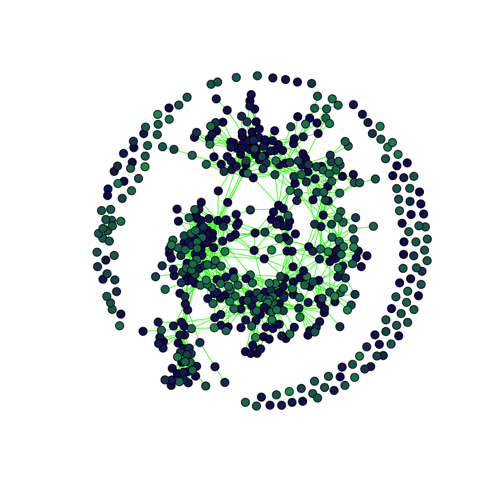
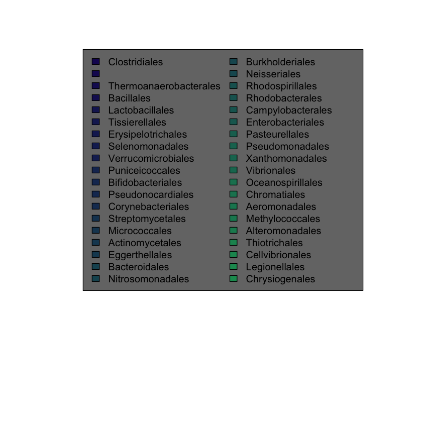

# This gives us a 1135x3957 matrix (people x species) of 16s rRNA counts `counts`
# And a dataframe `taxmat` of 3957 rows giving taxonomic information
load("localdata/ll_deep.rda")Paper Replication on Sparse Microbial Networks – Creating the Network
Work
Omics
Useful
Paper Replication
For: ‘A zero inflated log-normal model for inference of sparse microbial association networks’
Here, we will be looking at a paper (Vincent Prost 2021) that uses metagenomics data - specifically that of the LifeLines-DEEP gut microbiome data (Zhernakova et al. 2016).
Specifically, we want to recreate the following image:
Interestingly, there seem to be too many species! There are 3957 species here but there’re clearly less than that in the graph1. The paper does have this to say about it:
To simplify the plot, a threshold was applied here to remove taxa absent in more than 20% of the samples, leading to a total of 565 species.
Caption on Figure 5 (Vincent Prost 2021)
Frustratingly, the image we want to recreate is actually Figure 4 in the paper. Since both figures are interrelated and both are part of the short section “Inference of real-world microbial association networks”, I think it’s reasonable that this filtering method was used for both. It is pretty annoying that it’s not more clear, though.
# This is their own filtering code, from:
# https://github.com/vincentprost/Zi-LN/blob/master/venn.R
# Although I've broken it up a bit to make it more amenable to commenting
# Get a boolean 1135x3957 matrix of whether the species
# was found in the person or not
nonzeros <- counts > 0
# Get the number of distinct people that possessed each species
num.nonzeros <- apply(nonzeros, 2, sum)
# Get the total amount of people
total.cells <- dim(counts)[1]
# Only keep the species who appear in more than 20% of the people
keep.indices <- (num.nonzeros / total.cells) > 0.2
counts_el <- as.matrix(counts[, keep.indices])
taxmat_el <- taxmat[keep.indices,]
# We should now only be looking at 565 species
dim(counts_el)- 1135
- 565
Now that we have the data filtered in what we hope is the same manner as the paper, we can try to run their analysis. At a high level, the key idea of this paper is to model the data as being some transform of a gaussian latent variable \(z\). They wrote a function infer_Z to estimate the latent \(z\), after which they can use a technique to estimate the precision matrix, which should give us the association network for the microbes[^I haven’t done a blog post on Gaussian Graphical Models before, but I should… This section will make more sense if you have a background in them.].
# Load the code from the paper
source("./localdata/Zi-LN-master/inference.R")
source("./localdata/Zi-LN-master/utils/utils.R")# Get the zs
options(warn = -1) # turn warnings off because otherwise it's gonna scream...
zs <- infer_Z(counts_el)
dim(zs)- 1135
- 565
Now we need to infer the precision matrix. We’re stuck again referring to their methodology for Figure 5. Even more annoyingly, they do not use the regularization parameter that they used, but rather just say that they kept the top 1200 edges. So I had to run manual experiments to find out! Spoiler alert, the parameter is \(\lambda = 0.251\)
# Desired sparsity level (multiply by 2 b/c symmetric)
(2 * 1200) / (565*565)
0.00751820816038844
library("huge")
library("igraph")precision.matrix <- huge(zs, lambda = 0.251)Conducting Meinshausen & Buhlmann graph estimation (mb)....doneprecision.matrixModel: Meinshausen & Buhlmann graph estimation (mb)
Input: The Data Matrix
Path length: 1
Graph dimension: 565
Sparsity level: 0.007531538 -----> 0.007531538 associations <- precision.matrix$path[[1]]
# Number of edges, to verify we've done it right
sum(associations) / 2
1200
adjacency.graph = graph.adjacency(associations, mode = "undirected")
plot(adjacency.graph)There we go, we’ve plotted it! But wait… It looks rather crappy. I guess we’ll have to work a bit to make it nice.
# Add a "color" column to prepare for coloring graph nodes
taxmat.colors <- cbind(taxmat_el, "#000000")
colnames(taxmat.colors)[length(colnames(taxmat.colors))] <- "color"taxa.level <- "V5"
unique.taxa <- unique(taxmat.colors[,taxa.level])
num.taxa <- length(unique.taxa)
increment <- 89 / (num.taxa-1)
increments <- 10 + round(increment * 0:(num.taxa-1))
hex.map <- paste("#19", increments, "60", sep="")
for (i in 1:num.taxa) {
taxmat.colors[
unique.taxa[i]==taxmat.colors[,taxa.level],
"color"
] <- hex.map[i]
}plot(
adjacency.graph,
edge.color = "green",
vertex.size = 5,
vertex.label = "",
vertex.color = taxmat.colors[,"color"],
margin=c(0, 0, 0, 0)
)
plot(
adjacency.graph,
vertex.label.color = "#00000000",
vertex.color = "#00000000",
edge.color = "#00000000",
vertex.frame.color = "#00000000"
)
legend('top',
legend = unique.taxa,
bg = "#757575",
fill = hex.map,
ncol = 2
)

This seems close enough. We do end up with much more disconnected species, and I don’t really understand why because in their code they literally run:
do.call(huge::huge, c(lambda = l, list(x = X, method = "mb", verbose = T)))Where l is whatever lambda value causes 1200 edges. That code, however, is for Figure 5 whereas we want to replicate Figure 4; perhaps they chose a different l for Figure 4? But we’ll stop here for now.
References
Vincent Prost, Thomas Brüls, Stéphane Gazut. 2021. “A Zero Inflated Log-Normal Model for Inference of Sparse Microbial Association Networks,” June. https://doi.org/https://doi.org/10.1371/journal.pcbi.1009089.
Zhernakova, Alexandra, Alexander Kurilshikov, Marc Jan Bonder, Ettje F. Tigchelaar, Melanie Schirmer, Tommi Vatanen, Zlatan Mujagic, et al. 2016. “Population-Based Metagenomics Analysis Reveals Markers for Gut Microbiome Composition and Diversity.” Science 352 (6285): 565–69. https://doi.org/10.1126/science.aad3369.
Footnotes
In fact, I hand-counted them and got 500ish↩︎